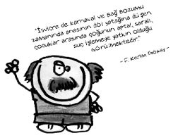

F. Kerim Gökay (1900-1987)
Türkiye Sosyal Psikiyatri Derneği kurucusu ve başkanı... Hekim, siyaset adamı, vali ve belediye başkanı...
İlginç uygulamaları olan bir politikacıdır. Belediye başkanıyken esnafı her fırsatta denetler, yüksek bulursa fiyatları indirir, sarhoşları derdest ettirip kent dışına çıkarttırırdı. Gürültünün insanların ruh sağlığına zarar verdiğini söyleyerek İstanbul’a klakson yasağı getirdi.
Dönemin başbakanı Menderes’in, kendisi için “deli” dediğini öğrenince, basın mensuplarını toplayıp, “O bir toprak ağasıdır, ruh hekimliğinden ne anlar ki bana deli demiş. O bana deli derse buna kargalar bile güler, ama ben ona deli dersem, hayatı boyunca akıllı olduğuna kimseyi inandıramaz.” demesiyle de adından söz ettirdi.
“Halk plajlara akın etti, vatandaş denize giremiyor.” diyerek dönemin elitlerinin halka bakışını gösterdi. Bir televizyon sohbetinde de şunu söylemiştir: “Ben halkla birlikte olmak için, sırf kendi ruh sağlığım için arada sırada belediye otobüsüne binerim.”
Kısa boyu dolayısıyla hakkında “Mini mini valimiz, ne olacak halimiz?” tekerlemesi üretilen Gökay, kısa olan boyu ile otuz beşlik rakılara isim babalığı da yapmıştır. Valiliği döneminde tekel bayiine gidip, “Ver bir Fahrettin Kerim!” dendiği zaman küçük rakı poşete anında konulurmuş. Alkole karşı olan ve bu nedenle Yeşilay Derneği’nin kurucuları arasında yer alan bir psikiyatr için ne garip bir tecelli!
Tıp ve siyaset dünyasının bu renkli ismi 1987’de İstanbul’da öldü.
